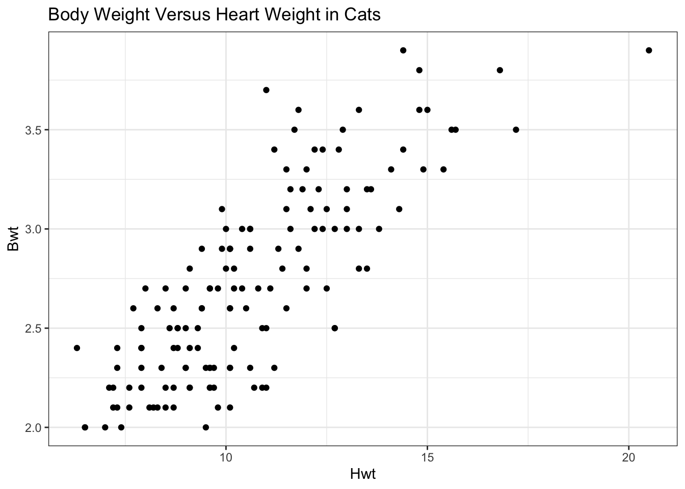
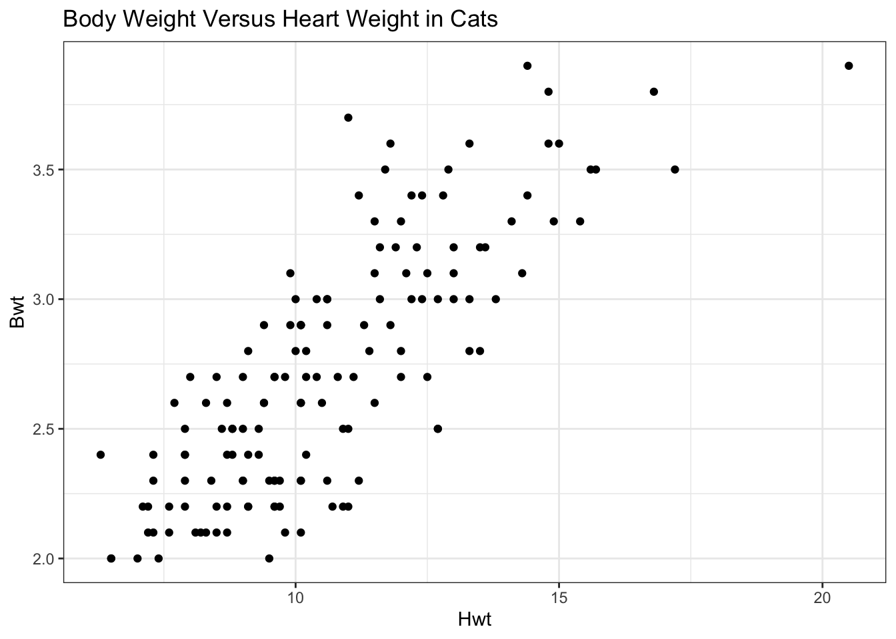
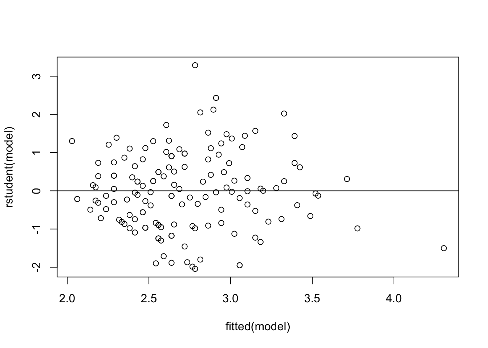

library(ggplot2)
library(MASS)
ggplot(cats, aes(x=Hwt, y=Bwt)) + geom_point() + theme_bw() +
labs(title = "Body Weight Versus Heart Weight in Cats")
Linear Regression
Linear regression is the process of creating a line that best fits the data that can be used to predict the value of the response variable for new data.
If we want to fit a linear model to our data it is important that we make sure that there is a linear relationship to model.
library(ggplot2)
library(MASS)
ggplot(cats, aes(x=Hwt, y=Bwt)) + geom_point() + theme_bw() +
labs(title = "Body Weight Versus Heart Weight in Cats")
In this example of body weight and heart weights of cats, we can use a scatterplot to visualize the data first to see that we have a linear relationship that can be modeled. When we have more than just 2 variables that we are considering to use in our model we can use a scatterplot matrix to visualize all the scatterplots at once.
Another tool to determine the linear association between two variables is correlation. The closer that the correlation coefficient r is to -1 or 1, the stronger the linear relationship. Something to keep in mind is that correlation is not a complete indicator of a relationship between the variables. If there is a polynomial relationship the correlation will be low, as well as outliers can make it seem like there is a linear relationship when there is not.
Regression Equations
If we see that there is a linear relationship that we can model, the next step is to estimate that line, called the least-squares or fitted regression line.
The true mean response variable \(Y\) conditioned on \(X\) can be written:
\(\mu_{Y|X} = \beta_0 + \beta_1 X\)
The statistical linear model, which looks at individual response variables \(Y_i\) can be written:
\(Y_i = \beta_0 + \beta_1 X + \varepsilon_i\)
Where \(\beta_i\) is the true regression coefficients that are unknown and \(\varepsilon_i \sim N(0,\sigma^2)\) is the random error or residuals.
Finding Regression Line in R
model <- lm(Bwt ~ Hwt, data=cats)
model$coefficients(Intercept) Hwt
1.0196367 0.1602902 The line that our linear model found is Body Weight = 1.02 + 0.16 Heart Weight.
We can plot our line over our data to see how well it fits.
ggplot(cats, aes(x=Hwt, y=Bwt)) + geom_point() + theme_bw() +
geom_smooth(method = "lm", se = F) +
labs(title = "Body Weight Versus Heart Weight in Cats")`geom_smooth()` using formula = 'y ~ x'It looks like a decent fit, but we can also look at the full estimate table of our model to see our \(R^2\) and the significance of our predictors.
summary(model)
Call:
lm(formula = Bwt ~ Hwt, data = cats)
Residuals:
Min 1Q Median 3Q Max
-0.58283 -0.22140 -0.00879 0.20825 0.91717
Coefficients:
Estimate Std. Error t value Pr(>|t|)
(Intercept) 1.019637 0.108428 9.404 <2e-16 ***
Hwt 0.160290 0.009944 16.119 <2e-16 ***
---
Signif. codes: 0 '***' 0.001 '**' 0.01 '*' 0.05 '.' 0.1 ' ' 1
Residual standard error: 0.2895 on 142 degrees of freedom
Multiple R-squared: 0.6466, Adjusted R-squared: 0.6441
F-statistic: 259.8 on 1 and 142 DF, p-value: < 2.2e-16We see that heart weight is significant and we should use it in our model, later we will look at what to do if we find that some of our variables are not significant. Our \(R^2\) means that 65% of the variance of body weight can be explained by heart weight. That means there are other variables that we don’t have that also explain the body weight.
Checking Assumptions
There are a few key assumptions in order to use a linear model
To check our linearity assumption we can look at the original plot to make sure it looks linear as well as look at a plot of the residuals versus the predicted values from our model.
plot(rstudent(model) ~ fitted(model))
Since we don’t see any big curvature, we can say that this model meets the linearity assumption.
To check for normality we plot the normal probability plot for the studentized residuals.
qqnorm(rstudent(model))
qqline(rstudent(model))To check for constant variance across the observations we plot the residuals versus the fitted values. If we see any fan shape or pattern then we have violated the assumption.
plot(rstudent(model) ~ fitted(model))
abline(h=0)When errors are normally distributed, the least-squares method we showed is the best method. When errors follow another distribution we should use different models.
Robust Regression
If our data has outliers, we can use robust regression to protect their influence on estimated parameters such as our regression coefficients. The main idea is we use a weighted least-squares where we down weight the outliers to minimize their effect on the coefficients.
What makes robust regression different is the M-estimator that is used. M-estimators are a generalization of least-squares where our \(\beta\) is chosen to minimize a loss function. We use a function of the residuals \(\rho\) which has multiple options. We will look at 2 different \(\rho\) functions: Huber and Bi-weight.
We are going to add outliers to the cats dataset we used for simple linear regression above to show how we would use robust regression to minimize their effect.
newobs <- data.frame( "Sex" = factor(c("F","F", "M", "F", "M")),
"Bwt" = c(3.5, 3.2, 3.1, 3.4, 2.9),
"Hwt" = c(30, 27, 22, 25, 18.5))
mycats <- rbind(cats, newobs)
ggplot(mycats, aes(x = Bwt, y = Hwt)) + geom_point() + theme_bw() + geom_point(data = newobs, aes(x = Bwt, y = Hwt), color = "red", size = 2)
Let’s compare how ordinary least-squares, robust regression using Huber method, and robust regression using Bi-square method.
model_OLS <- lm(Hwt ~ Bwt, data = mycats)
model_huber <- rlm(Hwt ~ Bwt, data = mycats, psi = psi.huber)
model_bisquare <- rlm(Hwt ~ Bwt, data = mycats, psi = psi.bisquare)
ggplot(mycats, aes(x = Bwt, y = Hwt)) + geom_point() + theme_bw() + geom_point(data = newobs, aes(x = Bwt, y = Hwt), color = "red", size = 2) + geom_smooth(method = "lm", se = F, color = "red") +
geom_smooth(method = "rlm", se = F, color = "magenta") +
geom_smooth(data = cats, aes(x = Bwt, y = Hwt), method = "lm", se=F, color = "blue") +
geom_line(data = data.frame("Bwt" = mycats$Bwt, "Hwt" = model_bisquare$fitted.values),
color = "green", size = 1.05)Warning: Using `size` aesthetic for lines was deprecated in ggplot2 3.4.0.
ℹ Please use `linewidth` instead.`geom_smooth()` using formula = 'y ~ x'
`geom_smooth()` using formula = 'y ~ x'
`geom_smooth()` using formula = 'y ~ x'